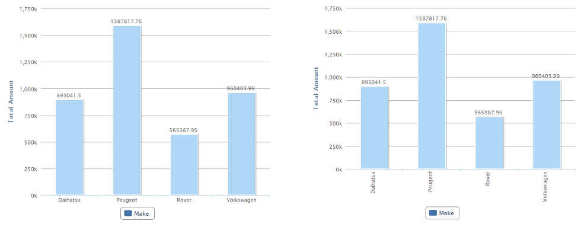
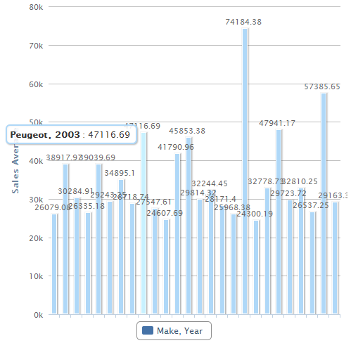

|
With this property we may define if the labels on the X axis will appear horizontally, vertically or rotated a certain angle. Values
Example Using "Horizontally" value in the propertyIf the control does not have enough space to show the labels (several data to display), the labels won't be displayed. To see the information related to specific columns, you can make a mouse over in the desired column, point, or data area (depending of the Chart type used).  ScopeOutput type Chart (Column, 3D Column, Stacked column, 3D Stacked column, Area, Stacked area and Line). Availability
|
| Backlinks |
| QueryViewer control properties |